ProjectNight.com
Wednesday Night Project Night, Page 9
Most recent night first.
November: Web slave in Montana, of all places, doing projects, of course. Reports when he gets projects done, or part done, or when he remembers his slave duties.
October: Photos of Mountain Dragon Fire Pit at Alaskan Alpine Club HQ, with parties, in camera. Uploading, ah, sometime.
September: ProjectNights happening. Mountain Dragon Fire Pit completed. Web slave busy. More later, perhaps weeks later.
August: ProjectNights have been happening. Web slave busy with other projects. The Mountain Dragon fire pit for the prestigious back yard of the prestigious world headquarters of the prestigious Alaskan Alpine Club was completed. Report and photos will be uploaded when the prestigious report and photo guy gets a round toit.
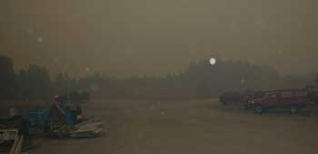
5 August 2009.... Jon's Machine Shop
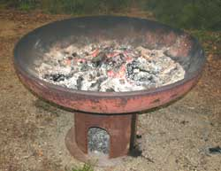
Smoke. Lots of smoke. The photo is when the sun was still high in the sky. Local forest fires have made Fairbanks as smoky as it has ever been. Worse than a few years ago when the summer tourists were not able to see anything but dense smoke from the tour buses. Now they can't even see out the smoke-fogged windows. Lots of ash falling also. Tourists will go back with Smoke stories. Interior Alaska is a fire ecology. We keep our carbon credits in the air where they are handy.
So the party elevated fire pit was fed well to globally heat the area to create an updraft to raise the smoke level, or something like that.
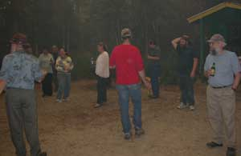
Big party, albeit as usual. A couple birthdays to celebrate. Happy birthday everybody. Much gourmet food on the cabin deck, good ale and fine wine. Birthday cake. Other things.
No mosquitoes. They could not breathe.
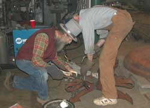
DRAGONS were advanced. Actual welding was done, because Jon got comfortable in front of the dragon gathering, and the dragon helpers held the dragons in the right positions, or somewhat right, a little to the left in a couple places.
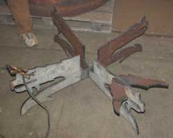
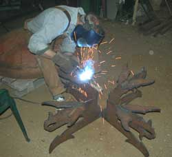
Dragon ears were welded on the dragon heads.
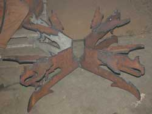
Well, we had to knock a couple back off after welding them in the eyebrow position rather than the ear position. Well, dragon welding is not a common pursuit, especially amid thick dragon smoke. How were we supposed to know where dragon ears go on dragon headed feet for a dragon elevated fire pit? We have not yet written the instructions.
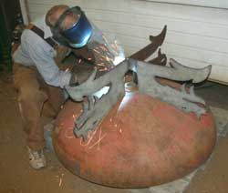
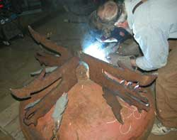
All four dragons are connected to each other, to support the pipeline end cap. They are not connected to the end cap, so they can be moved separately so the total weight is not so heavy. The end cap is heavy.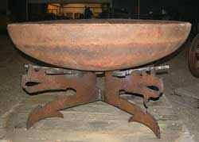
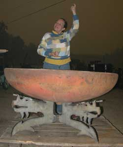
Our genuine Dragon consultant, a uniquely knowledgeable person, first determined that the dragons were female, and then performed a very precise dragon introduction, consultation and welcome, assuring dragon protection for the fine folks who enjoy the dragon fires in the future.
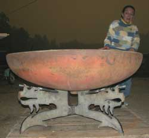
If you undertake your own dragon headed feet elevated fire pit project, we can schedule a proper introduction of your dragons.
You might notice the difference in each dragon head. They bring the energy of youth and the wisdom of age as was requested.
The fire pit has a few refinements yet to be completed, the fire spreader over the center draft hole, the chain lifting arrangement, a separate swing-barbecue grill, a few more incantations and odd thoughts.
Then we will undertake the transport to the prestigious Alaskan Alpine Club world headquarters and dragon command center.
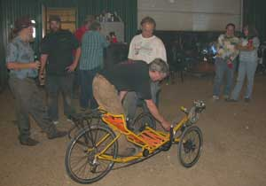
Other projects were completed. The recliner bicycle was welded and peddled on a race out onto the real road and back. It got back before anything broke. The race was won.
The snow load scale was evaluated. It is like a digital bathroom scales surrounded by separate scales so that the whole section of freshly fallen snow in the area of the scales does not support the middle part that is being weighed, which would otherwise alter the weight. Each section becomes separated by the separation and the action of the scales, to leave the center section free-floating on its scale for an accurate weight. We weighted the smoke load. It was heavy.
Chitina dipnetting took a dip in productivity in the last week. Flood waters. No fish running.
ProjectNight at Duff's shop next Wednesday. Spread the word. If you are not on the ProjectNight.com email list for the weekly notices, tell the web slave. His email is somewhere on this website. The list was lost in cyberspace a couple times, so let the web slave know if you are among those who are lost. Or just fire off a volley of high caliber hand gun ammo to attract some attention.
29 July... Jon's Machine Shop (no photos)
Big party, big party, many people, much discussion of all concepts known to humans. Significant gathering of the colleagues on the famous surplus yellow Alaska Oil Pipeline bridge over Goldstream Creek back there out of sight in the trees.
A bee-blower was repaired. Some people have those noisy gas powered leaf blowers. Bee keepers have bee blowers. Well, if you keep bees, you can use whatever works if your friends get some honey.
The neck support curve on the dragon headed feet for the elevated fire pit were ground down to perfectly match the curve of the pipeline end cap. Progress.
A new wooden boat is in the works in the back room of Jon's Shop.
The party continued.
8 July 2009... Matt's Shop
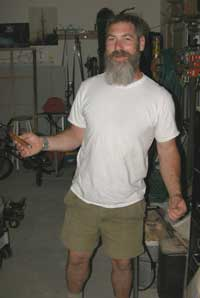
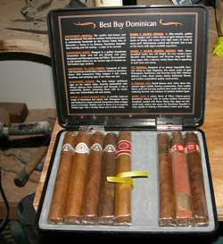
Well now, we had some truly superlative cigars. And that ought to be enough for a project night among gentlemen.
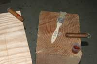
Alas, there were some high energy sorts there who dismissed the idle chit chat, to work on projects. A battery charger was fixed. Some fine kitchen cutlery was sharpened. A brand new, first time opened, Makita Rattle Tapper was introduced for the usual pontifications on the best cordless screw guns. It was so new that the guy did not even have a project for it yet. Well, the dirtbag Miluakee guys simply discontinued the batteries for his otherwise still fully functioning Miluakee screw gun, to force people to buy new screw guns, so everybody stop buying Miluakee tools. There, that ought to teach them a lesson.
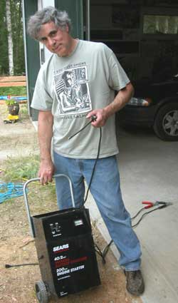
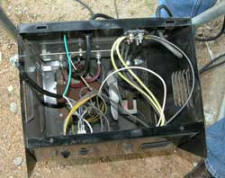
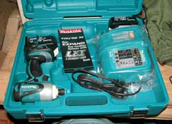
And we enjoyed some Gamel Dansk, as a health beverage, and intellectual energy boost, of course.
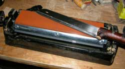
The entire ProjectNight delegation was given a walk-through tour of the two story timber frame quarters Matt is building on tall pilings at the edge of the trees by his Shop. Timber frame construction is impressive.
24 June 2009... Jon's Machine Shop again
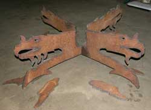
DRAGONS again. Well, so as to not wake the sleeping dragon of ProjectNight tradition, by completing a project, the dragon project was suitably extended by much sitting around discussing great and weighty matters of serious consequence, and admiring the dragons laying on the floor. After awhile the dragon guy disrupted the conversations by noisily chipping slag off the dragon cut edges. What? Certainly you did not expect there to be no slag from high quality plasma arc steel cutting by the guy whose entire experience plasma cutting was those dragons. The cuts are not the most esthetic steel cuts in the industry. But they look more gnarly dragon skin scales-like, like they should. And therefore the dragon project is ready to advance to the welding phase next time, maybe after a bit of grinding on the four edge surfaces that will be in contact with the 48 inch diameter Alaska oil pipeline end cap that will be the fire pit bowl.
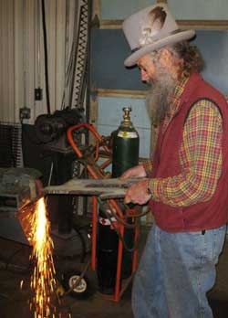
There were two impressive thick steel end caps for the Alaska oil pipeline, one for each end or course, just in case they needed them in case they got done early, to keep terrorists out of the pipeline while they finished up the pumping part of the project at Prudhoe Bay, and got an oil tanker at the other end of the pipeline in Valdez, to dump the oil into of course. Well, by the time we high quality union workers got the oil pipe line completed, because we did only the highest quality work on everything, the nation was so desperate for oil to no longer be dependent on Arab oil so we did not have to ever fight any wars over it, Alyeska Pipeline Company was ready to start the pumps immediately, and an empty oil tanker in Valdez (Exxon Valdez) was sitting under the other end. Therefore they did not need the two end caps. So they asked Stan, who knows everybody, and has accumulated everything that was ever shipped to Alaska and not needed, out among the trees around his place, if he wanted them, knowing the answer. Well, after they sat out in the trees around Stan's place for many years, he asked Jon if he wanted them to sit out in his accumulation of steel stuff, knowing the answer. Jon knew they were originally designed for elevated fire pits for back yards. He promptly used one for himself, and asked Doug if he wanted the other one for the prestigious world headquarters of the prestigious Alaskan Alpine Club, knowing the answer.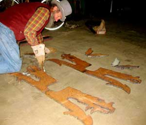
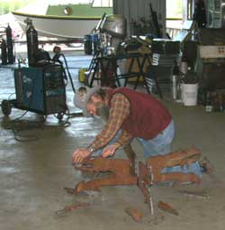
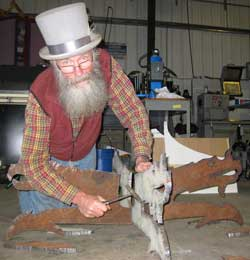
Well, we had to change their appearance and hide them in back yards because if the oil industry ever needs their Alaska oil pipeline end caps back, in case they want to stop pumping oil and keep terrorists or tourists out of the pipeline, they will check the records, and talk to Stan, who will talk to Jon, and I'm not sure we want to sell those end caps back to the oil companies, unless maybe they agree to build another pipeline so we can get another pipeline job. And this time I promise I won't piss away all the money I earn.And Bill brought a broken water pump to fix at ProjectNight. It got fixed. Not sure if it will pump water, but it had a fixed appearance by the time we finished eating the gourmet Alaska Red salmon caviar that Madeline made, and the two types of smoked salmon that a couple ProjectNight sorts brought, and the other gourmet stuff that was left over in the frig, along with fine wine, good ale, home made 8 year old Alaska raspberry liqueur and several stories.
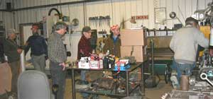
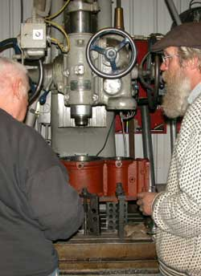
The old 1909 red steam engine cylinder still sitting there on the milling machine table was discussed by the guy who brought it over for an upgrade at ProjectNight about a year ago, maybe two. On schedule.
John's Yukon River boat (John, not Jon) was finished, after he worked on it all winter and spring. It was sitting out in the rain to acclimatize. The woodwork on the boat is artwork quality.
Whoa, that sounds like something actually got done. That's it. No more for this report. ProjectNight.com cannot be allowed to imply that anything ever gets done, or somebody may want to hire us for real work.
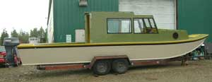
17 June 2009... Jon's Machine Shop
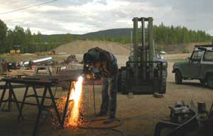
DRAGONS were cut from steel, with fiery plasma from the mouth of a Fire Breathing Plasma Dragon Head !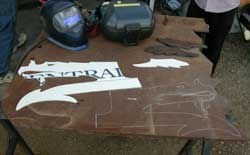
The dragon headed dragon feet for the elevated Dragon fire pit for the world headquarters of the prestigious Alaskan Alpine Club lurched back into full project mode, from out of the corner dust and floor slag of the shop. Therefore the dragon project cutting is finished, except maybe for the temptation of some finish work to torch off a ragged wobble here and there. Well, the total plasma arc experience of the guy doing the cutting, is those four dragon silhouettes and the eight ears. If he was the only plasma arc cutter in the world, a lot of people would be learning how to do their own plasma arc cutting. The next Dragon phase will be the fitting and welding and drinking of more Gamel Dansk.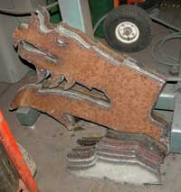
The Project Night crew examined and homdihoomed over John Manthei's almost finished superlative wood Tanana River Boat. It is a classic made by a wood master. You cannot find a modern river boat made to that level of classic quality.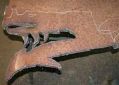
There were sit-around stories told, while enjoying home brewed beer, Gamel Dansk, Russian honey vodka, Russian Birch vodka (both hand delivered from Russia), fresh Alaska water-white honey (luscious), in the comb, bee brood in the comb, rose pollen, dandelion pollen and whatever else showed up as the night progressed.
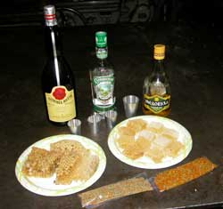
The floating island report was offered as the scheduled lecture of the evening. If you have a lake or pond available, build a floating island. Be the first on your block to advance the fad. The floating islands at Yakima Washington, in an old gravel pit pond beside the freeway, are locally acknowledged as the primary visual reference for Yakima.
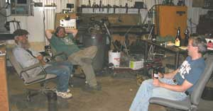
May 2009: The ProjectNight web slave was slaving away on floating islands and lake shore arboretum tree planting in Yakima while the regular project night guys were drinking Gamel in Fairbanks shops. The world aint fair. It's the government's fault.
15 April 2009. Tax Money Seizure Day.....
What? You suggest a dearth of recent Project Night reports? That is because projects have been worked-on. Well, it is either ProjectNight or completed projects, not both. And the web slave is somewhere other than his desk computer so we cannot find him to flail him into submitting to his unpaid duty to report all that must be reported on current Alaskan ProjectNight productivity.
However, this being the official Tea Party Tax Protest Day, with the reports of Tea Party Tax Protest parties around the nation skyrocketing this year, if you can imagine that, the ProjectNight crew would be remiss if they did not meet at a shop and fulfill their Alaskan duty to support the Americans formally protesting the Washington DC king's forced seizure (theft) of the working people's hard-earned money for the lives of leisure by government insiders.
But because the assistant web slave is incompetent at this job, he slipped over to BBQnight.com, and copied some of the report those folks produced, and pasted it onto this web page. That is why he is an assistant web slave, instead of a full web slave. It takes years of apprenticeship to become a full web slave. Web slaves and their assistants may have to survive on moose meat and white rice, but at least they cannot afford to pay monetary tribute to the IRS thugs.
Here is what the BarbecueNight.com folks, over there on the other side of town, said about the belatedly awakening American taxpayers..........
They are noticing the foreign news reports (reported everywhere but in the US) about how many huge families (with servants) of foreign military generals and colonels are moving to the ritzy areas of Jordan, Egypt, France, and other safe places, suddenly rich, spending American dollars from Swiss bank accounts.
Meanwhile the US government accounting agencies keep reporting and reporting and reporting that for some strange reason the hundreds of billions of dollars that American taxpayers paid for "foreign aid" and "reconstruction" in Iraq, Afghanistan, Pakistan and many other countries, produced no schools, roads, hospitals, electricity, sewage treatment plants, clean water supplies or anything else we were told as the reason for the IRS taking our money. The money simply disappeared, or went to "security" that produced no security, verified by the US government accounting agencies. It magically reappeared in the Swiss banks accounts of wealthy government insiders. Actual magic.
And the taxpayers who are trying to keep up with basic living expenses, increasingly without success, are figuring out the billions of taxpayer dollars going to the private bank accounts of banking CEO's, military industrial complex CEO's and other political insiders.
Then there is the legion of US Congressional staff with salaries of way over $100,000 plus full medical benefits, lavish perks and superlative retirement benefits, who keep quiet about the rampant corruption and money flow in Washington DC, but are reported to be making jokes about how laughably gullible the Americans are for believing the obvious lies of Congressmen whom the gullible voters keep voting back into office.
Those BBQnight folks should not be allowed to say such things about the benevolent folks in the American Government of Theft and Corruption. In fact, they will soon not be allowed to say such things under some federal laws being proposed by certain government officials, "to secure the world image of American unity during a time of war".
The ProjectNight folks used words of more, ah, precise nature, describing the insatiably greedy and power-hungry government, ah, folks, but in the spirit of unity with the Thieves of Washington DC, and their dutiful IRS colleagues, needing "unity" to sustain the Bush/Obama Presidential Ego Gratification Wars that require a few more hundred billion, or trillion, dollars from the American taxpayers, we salute the federal government's teetering yet still successful fooling of Americans out of their money. The photo of the salute was deemed not appropriate for uploading.
No actual project even came into sight the entire evening, and no shots were fired, and the whisky-soaked black market untaxed tea bags were thrown into the compost pile.
25 March 2009: Fred's shop.
Well, the usual suspects, and a few unusual ones, showed up for the usual discussion of projects, over the usual modest array of whatever convenient food and drink was found in the frig or on the shelf about the time the suspects each remembered that they were late for ProjectNight.
There was much good news to discuss at ProjectNight. Our great nation's great leader has reported that the economy is recovering and we are on the way to prosperity, perhaps with only a bit more patience with just a little more of the normal adjustment processes being graciously designed for us by the government bankster CEO's who know how to do all those complex things with our money for our benefit.
And our great leader's great military leaders report that we are now starting to win the wars in Afghanistan, Iraq and Pakistan, with our superior technological advantage and our winning the hearts and minds, and other bomb-scattered body parts of the local people, mostly the women and children who were living in the houses our Predator missiles disintegrated. Aint it a great thing for OUR military joy-stick computer geeks to fly remote controlled aircraft from Virginia USA, to slaughter kids living in abject poverty half way around the world where none of the Americans can see what their military orcs are doing in the name of, ah, what is it this time, oh, killing terrorists? Back in Vietnam we had to burn them alive with napalm and poison them with Agent Orange, and had to actually be there to do it. Drudgery.
With technology like ours, even the gods could not prevail against the great American Presidential Ego Gratification Wars. Grovel or flee before the Bush/Obama War Empire. Nothing can stop the Roman, ah, American juggernaut.
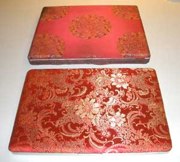
As to the matter of the unusual suspects, the assistant web slave showed up with his foofoo fabric covered laptop project, that actually got done during the course of our great and weighty political dissertations. It was so foofoo that none of the cigar smoking, whisky drinking, hammer pounding and chain saw wood working sorts even wanted their picture taken on the same Project Night, especially Fred who keeps slugs loaded in the shop shotgun just in case a nail won't pound into a knot as fast as he prefers. Well, what do you do after the sledge hammer won't work?That is the new MacBook at the bottom, and the old iBook at the top. Just slather some glue over the computer and your choice of fabric, stick them together, then trim the edges. Be a little careful with the slathering so the dribbles do not drip into the works and gum the programs to the processes.
Well, in a yet boring laptop world, where boring laptop manufacturers can only recognize boring white, black and grey, you need only spiffy up their failures a bit, or wear a tophat, to cause a little "oh, look at that", to compensate for the boring time before and after the "oh, look at that", or something like that.
Yes, the military will start making cammo pattern laptops so the enemy cannot see them in the jungles, sand dunes or offices. If you see a person working on one, act like you don't know what he is doing.
That's it for the report from Fred's shop. Spread the word that Obama and his DemocanRepublicrats are solving the economy and winning the wars. It is news of that nature which makes our leaders great and therefore makes us great and therefore makes the world a great place to live, if you can find a place to hide when the lies fall apart or get in the way of Fred's post-sledge hammer solution.
25 February 2009: Matt's Shop.
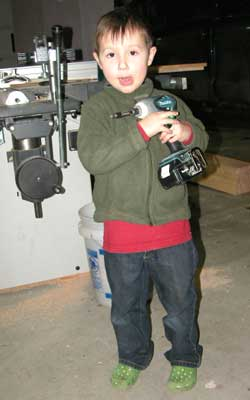
Attracted by the international popularity of ProjectNight.com, and potential for an advertising-induced surge of product sales, a major power tools manufacturer (the bluish colored one, not the yellow or red one) sent its Sales Manager to ProjectNight.com to demonstrate it latest products. He featured their new rattle-tapper with auditory features that are popular and designed for Obama's new Economic Stimulus Child Labor Program (ESCLP), "Putting the Kids Back to Work" (PKBW). Pictured here is the Sales Manager.
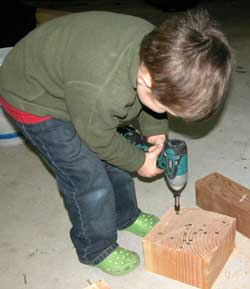
Sheet rock screw production is soaring as blocks of wood "building America" are being structurally enhanced for Obama's new Building America Program (BAP). So get your kids back into the labor market to keep those multi-billion dollar bank officer bonus programs sucking cash into the accounts of the bank officers. What is good for the DemocanRepublicrat War Regime cronies is good for America. Or something like that.
One of our bank executive ProjectNight colleagues, or maybe he is a lawyer, much the same, exposed the secret of where the rich really keep their money, when he brought in his secret-hidden-compartment-in-the-fake-book repair project. Always look for a book with no title on the book binder, and a fancy engraved wood surface. Lawyers can't read anyway, or they would not argue over the words of the written law.
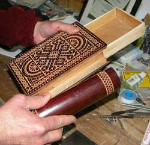
I would have put a Sherlock Holmes title on it, but then I don't have enough money to buy even a fake book.
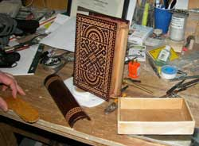
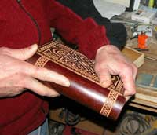
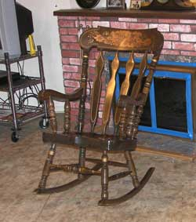
Notice the chair. It is an actually completed, actually useful, ProjectNight.com project featured in the previous (below) ProjectNight. Only we insiders know that this original antique was repaired in 2009, with a hidden imported wood dowel connecting two legs and a rocker. Even the Antique Road Show furniture twins cannot find the repair, unless they monitor ProjectNight.com to learn our techniques for their own repair techniques.
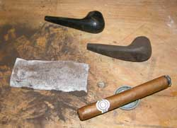
That is one fine Monte Cristo cigar, with a luscious flavor. ProjectNight.com aint no schmuck amateur operation of mere common plebeians in from the woods.
And both of the last two of the four Lignitized Wood pipes are getting very close to experiencing the succulently rich flavors and aromas of some finely cured pipe tobacco, if they ever really get finished. They are imperiled enough by the attributes of the ProjectNight productivity policies, which was further damaged by the Bush War and Police State policies, and now the Obama Print-More-Worthless-Billions-of-Paper-Dollars-Program (PMWBPDP) leaves their future as questionable as smoke.
18 February 2009: Matt's Shop.
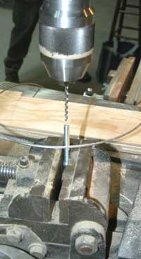
Here in the far frozen north where the common folk ski to where we are going, on skis made in the 60's or 70's that still work fine, we gotta repair the cable bindings on occasion. That means occasionally drilling a hole in a bolt that is about the same size as the drill, requiring profound accuracy, for a cable about the same size, to be silver soldered together. The repair lasts longer than the original equipment, especially with the expertise of the ProjectNight staff.
It was difficult to align the drill with the bolt during the comments about the unmitigated corruption of the Washington DC Regime. The greatest escape of the century was Bush skating out of be recognized as the worst US President by Obama adopting the Bush Presidential Ego Gratification Wars as the Obama Presidential Ego Gratification Wars that will be miserably lost during Obama's watch, with no more "mission accomplished" than was accomplished in Vietnam. Darn near drilled right through the entire length of the bolt.
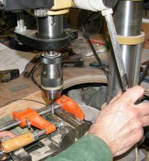
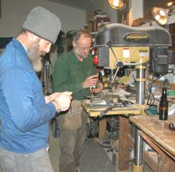
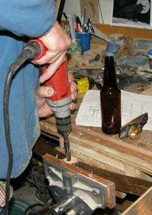
And this is how antique furniture is professionally restored, if our colleague could get paid for his wood butchery.
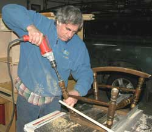
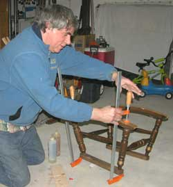
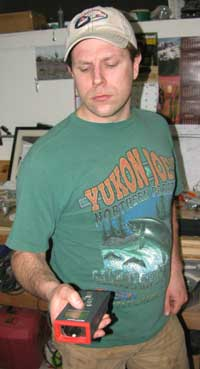
The New Toy Staff demonstrated a laser instrument that made more measurements and calculations than the staff could use for anything useful.
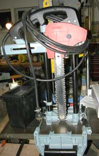
And this thing, with a thinner blade than the previously featured tool that looks like it, does something to wood that is very impressive, very useful, and so specialized that unless you need a wood beam reinforced with an internally slotted, modified steel I-beam, you will just end up using it to cut firewood.
Yes, the Lignitized Wood smoking pipes are progressing on schedule, with fine home baked bread and Jarlsburg cheese.
More projects as more projects happen next project night, or might get reported, on occasion.
Page 10 November 09 - Present
Page 8 October 08 ---- January
09
Page 7 March 08 ------ October
08
Page 6 February 08 --- March 08
Page 5 December 07 -- February
08
Page 4 October 07 ---- December
07
Page 3 July 07 --------- October
07
Page 2 April 07 -------- June
07
Page 1 November 06 -- March 07